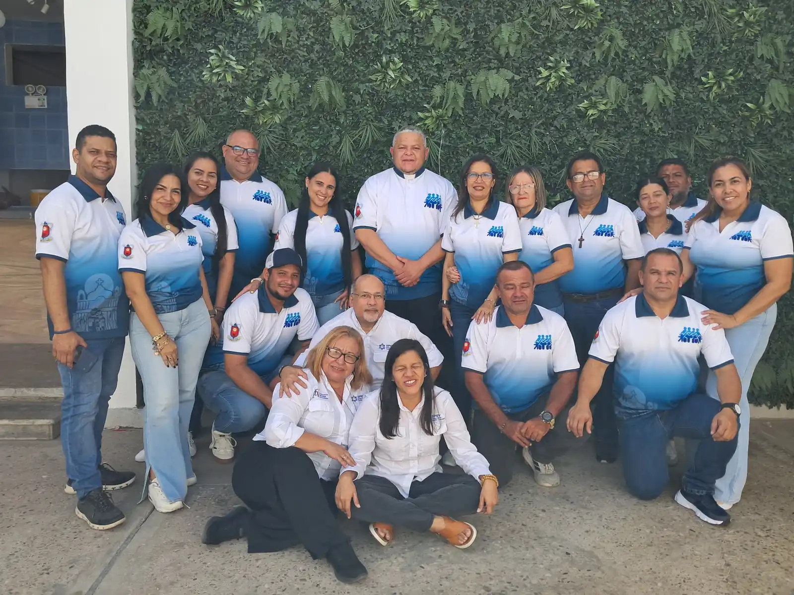

Familia
Actividades del Área de Familia
Entre 2022 y 2026 el Área de Familia y Vida celebró asambleas nacionales, campañas de Abrazo en Familia y Semana por la Vida, formaciones y encuentros de parejas.

2026
- 17 de octubre: II Encuentro de Parejas «Amarse en lo cotidiano», en El Hatillo. Once matrimonios, según la nota, trabajaron la comunicación conyugal. CEV
- Campaña Abrazo en Familia 2026, «La alegría del amor que sana y reconstruye», 36.ª edición según la CEV. CEV, 09-10-2026
- 25 al 27 de septiembre: Asamblea Nacional de Pastoral Familiar, en Casa Ibarra, Montalbán, Caracas, con seis arquidiócesis y veinte diócesis. CEV, 30-09-2026
- 16 al 18 de junio: I Encuentro Nacional de Asesores, compartido con las áreas de Laicos y Juventud. CEV, 19-06-2026
- 8 de junio: I Encuentro Provincial de Pastoral Familiar de la Provincia Eclesiástica de Barquisimeto, en reunión virtual, donde se acordó preparar un encuentro provincial en octubre, intensificar la formación de agentes y acompañar a la Diócesis de Guanare. CEV
- 23 de mayo: Retiro de Parejas «Un encuentro de amor en Cristo Rey», en El Hatillo, con espiritualidad ignaciana. CEV
- 19 al 25 de marzo: Semana por la Vida, con tres encuentros formativos virtuales. CEV
2025
- 26 al 28 de septiembre: Asamblea Nacional de Pastoral Familiar, en la sede de la CEV, Caracas, con representantes de más de 25 diócesis según la nota. CEV
- Campaña Abrazo en Familia 2025, «Familia, camino de esperanza para la Iglesia y la sociedad», anunciada el 3 de octubre. CEV, 03-10-2025
- 7 al 9 de marzo: módulo III del Diplomado de Pastoral Familiar, en la sede de la CEV, con el INPAS. CEV, 13-03-2025
2024
- 13 y 14 de septiembre: Asamblea Nacional de Pastoral Familiar, en modalidad virtual. CEV
- Octubre y noviembre: campaña Abrazo en Familia 2024, con mensaje del 7 de octubre de 2024 y presentación oficial en Maracaibo el 4 de octubre. CEV, 07-10-2024
- 11, 15 y 17 de abril: tres formaciones virtuales de la Semana por la Vida. CEV, 12-04-2024
2023
- 5 al 12 de noviembre: semana de Abrazo en Familia 2023, con culmen el domingo 12. CEV, 02-11-2023
2022
Estas actividades las organizó el Departamento de Familia e Infancia, antes del rediseño del SPEV de 2023.
- 6 al 13 de noviembre: campaña Abrazo en Familia 2022. CEV, 17-10-2022
- 22 y 23 de septiembre: Asamblea Nacional de Pastoral Familiar, virtual. CEV, 29-09-2022
- 27 y 28 de agosto: 3.ª Asamblea Nacional de Encuentros de Preparación Inmediata al Matrimonio, en Caracas y de forma virtual. CEV
- 20 al 27 de marzo: Semana por la Vida, virtual, y II Seminario por la Vida los días 11 y 12. CEV, 21-03-2022
- 28 y 29 de enero: Asamblea Nacional de Pastoral Familiar e Infancia, virtual. CEV, 31-01-2022
Los mensajes de la Comisión Episcopal de Familia e Infancia son de la Comisión, no del Centro.